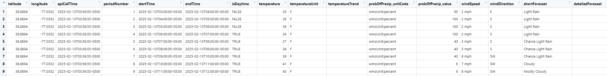

18. assignment - weather API
The United States National Weather Service maintains a free API that returns weather information for specific latitudes and longitudes. For this assignment you will call the API and store the returned info in CSV files. There are two different API endpoints that will be needed for this assignment.
The Weather API
All URLs used to call the weather api start with https://api.weather.gov/. This is known as the “base URL” for the API.
The following describes how to use the weather API.
https://api.weather.gov/points/{latitude},{longitude}
The first “endpoint” we will use has the following format:
https://api.weather.gov/points/{latitude},{longitude}
where {latitude} and {longitude} are replaced with specific numeric values for latitude and longitude. For example, the following URL returns data for info about latitude 38.8894 and longitude -77.0352 (make sure to notice the comma “,” that appears between the latitude and longitude numbers in the URL) To make a similar call for other locations, simply replace the values with the appropriate latitude,longitude numbers.
https://api.weather.gov/points/38.8894,-77.0352
This “API call” doesn’t return the actual weather data. Rather, the JSON it returns includes references to other API URLs that can be used to get the actual weather data (see below). Specifically, the URL that we will be interested in is identified in the “forecastHourly” entry in the JSON. Below is an outline of the JSON that is returned from this API call. We omitted most of the data so that we can clearly highlight where the “forecastHourly” URL is in the JSON.
Click here to see the full JSON as it was returned from the API.
// (Note - this is a comment. It starts with // Classic JSON does not
// allow for comments, but JSONC (i.e. JSON with Comments) is recognized
// by some JSON parsers.) The actual API does not include comments in the JSON
// that is returned.
{
"@context":[
// SOME STUFF REMOVED FOR BREVITY
],
"id":"https://api.weather.gov/points/38.8894,-77.0352",
"type":"Feature",
"geometry":{
// SOME STUFF REMOVED FOR BREVITY
},
"properties":{
// SOME STUFF REMOVED FOR BREVITY
// THIS IS THE LINE WE ARE INTERESTED IN
"forecastHourly":"https://api.weather.gov/gridpoints/LWX/97,71/forecast/hourly"
// SOME STUFF REMOVED FOR BREVITY
}
}getting the hourly forecasts
The “forecastHourly” URL is obtained from the API call described in the previous section (see above). That JSON included the following line. It is this URL that we use to get the actual hour by hour weather forecast data.
“forecastHourly”:“https://api.weather.gov/gridpoints/LWX/97,71/forecast/hourly”,
Among other data, the JSON returned by this URL includes an array of time “periods”. Each period describes the forecast for a single hour of time in the specified location. For this specific URL there are 156 such periods in the data (the exact number of periods may change each time you visit this URL). Below we show an example of the first 2 periods from a specific call to this API. We removed much of the other data from the JSON shown below. (NOTE that the forecast data could potentially change every time you call the API)
{
"@context":[
// SOME STUFF REMOVED FOR BREVITY
],
"type":"Feature",
"geometry":{
// SOME STUFF REMOVED FOR BREVITY
},
"properties":{
"units":"us",
"forecastGenerator":"HourlyForecastGenerator",
"generatedAt":"2025-02-12T17:34:21+00:00",
"updateTime":"2025-02-12T17:30:41+00:00",
"validTimes":"2025-02-12T11:00:00+00:00/P7DT14H",
"elevation":{
// SOME STUFF REMOVED FOR BREVITY
},
"periods":[
{
"number":1,
"name":"",
"startTime":"2025-02-12T12:00:00-05:00",
"endTime":"2025-02-12T13:00:00-05:00",
"isDaytime":true,
"temperature":34,
"temperatureUnit":"F",
"temperatureTrend":"",
"probabilityOfPrecipitation":{
"unitCode":"wmoUnit:percent",
"value":12
},
"dewpoint":{
"unitCode":"wmoUnit:degC",
"value":-0.5555555555555556
},
"relativeHumidity":{
"unitCode":"wmoUnit:percent",
"value":89
},
"windSpeed":"6 mph",
"windDirection":"E",
"icon":"https://api.weather.gov/icons/land/day/ovc?size=small",
"shortForecast":"Cloudy",
"detailedForecast":""
},
{
"number":2,
"name":"",
"startTime":"2025-02-12T13:00:00-05:00",
"endTime":"2025-02-12T14:00:00-05:00",
"isDaytime":true,
"temperature":34,
"temperatureUnit":"F",
"temperatureTrend":"",
"probabilityOfPrecipitation":{
"unitCode":"wmoUnit:percent",
"value":13
},
"dewpoint":{
"unitCode":"wmoUnit:degC",
"value":-0.5555555555555556
},
"relativeHumidity":{
"unitCode":"wmoUnit:percent",
"value":89
},
"windSpeed":"6 mph",
"windDirection":"E",
"icon":"https://api.weather.gov/icons/land/day/ovc?size=small",
"shortForecast":"Cloudy",
"detailedForecast":""
},
// THE FIRST 2 PERIODS ARE SHOWN ABOVE.
// THE API CALL RETURNED 156 PERIODS.
// THE REMAINDER OF THE PERIODS WERE REMOVED FOR BREVITY.
]
}
}More info about the weather API
The info above should cover all that you need for this assignment. However, if you want to know more about the API see the following URLs.
How to use the API
Other information about the API
What you need to do
Use of AI
You MAY use AI to help you with this. However, you MUST UNDERSTAND all the code that you submit. If you don’t understand the code, don’t submit it.
You may only use Base R, and the packages that we have learned about in class. This includes the following packages:
- tibble
- magrittr
- fs
- jsonlite
- stringr
You should inform the AI of these instructions so that it knows not to use functions from other packages. However, keep in mind that even if you do tell the AI to only use functions from these packages, it might use other packages anyway. Ultimately, you are responsible for reviewing the code and ensuring that it adheres to these directions.
Note that we did not cover all the functions in these packages. Nevertheless, you MAY use functions that we didn’t cover from these packages, but you must understand the code before submitting it (research on your own any functions that we didn’t cover in class).
You MUST include a copy of all of your conversations with the AI in your submission. (You may have multiple conversations with the AI). Use the yrWebSnap chrome extension to take a snapshot of the conversations with the AI.
You may be tempted to propmt the AI with a complete copy of the instructions in this file. That is fine. You can try that. However, sometimes you have better succes with an AI if you keep you focus on one particular part of the problem at a time. Experiment and see what works. Write up your experiences about what worked and what didn’t in the Quarto file you submit.
summary
This section summarizes what you need to do. The next section goes into more detail about each step.
Create the following R functions
getForecastDf() -
Create an R function that calls the API to get the weather forecasts for a specific latitude and longitude. The latitude and longitude should be passed to this function as arguments. The function should return a dataframe
that contains the weather data. (see next section for details)function createForecastFiles() - Create a second R function that calls the first function in a loop. Each time the first function is called the data that is returned should be saved in a new csv file. All of the CSV files should be placed in the same folder
(see next section for details)combineCsvFiles() - Create a third R function that takes an entire folder of these csv files and returns a single dataframe that contains all of the rows from all of the csv files.
(see next section for details)
Writeup your results in a Quarto document.
(see next section for details)
detailed instructions
function getForecastDf()
Create the following function. See below for an explanation of each of the arguments. Below is a list of what the function needs to do.
getForecastDf = function(latitude , longitude){
# your code goes here
}(a) Check all arguments …
Your function should check that the arguments adhere to the following rules. If they don’t, the function should stop with an appropriate error message - i.e. call stop( SOME_ERROR_MESSAGE )
(b) Check all arguments …
This function should return a non-nested dataframe (i.e. a “normal” dataframe in which each entry is a single number, TRUE/FALSE, character value or NA). The dataframe should include all of the data from each period from the hourly weather forecast as shown in the image below. There should be one row in the dataframe for each time period from the JSON.
In addition, the first 3 columns of the dataframe should include the following information. These extra columns will have the exact same data for each row in the dataframe.
latitude - ie. the latitude
longitude - ie. the longitude
apiCallTime - ie. the date and time that the API was called which included the info in the dataframe. The date/time/timezone should be formatted in ISO 8601 format (see the appendix at the bottom of this file). You can get this info using the following R code:
apiCallTime = format(Sys.time(), "%Y-%m-%dT%H:%M:%S-%z")
Below is an image of an example of the first few rows of a dataframe returned from this function.

function createForecastFiles()
Create the following function. See below for an explanation of each of the arguments. Below is a list of what the function needs to do.
createForecastFiles = function(latitude ,
longitude ,
sleepSeconds,
outputFolder = "." ,
createFolder = FALSE ,
numberOfApiCalls = Inf){
# your code goes here
}(a) Check all arguments …
Your function should check that the arguments adhere to the following rules. If they don’t, the function should stop with an appropriate error message - i.e. call stop( SOME_ERROR_MESSAGE )
latitude, longitude, sleepSeconds, numberOfApiCalls numeric vectors whose length is 1.
createFolder should be a logical vector whose length is 1.
(b) possibly create the output folder
If the outputFolder doesn’t exist then
If the
createFolderargument is FALSE then the function should stop with an appropriate error message - i.e. call the function, stop(ERROR_MESSAGE).If the
createFolderargument is TRUE then the function should create the folder To do this, use the dir_create function in the fs package.
(c) call the getForecastDf in a loop
The createForecastFiles function should continuously call the function getForecastDf in a loop. The loop should go around as many times as is specified in numberOfApiCalls argument. As part of this loop the function should call Sys.sleep(sleepSeconds) to ensure that there are at least sleepSeconds seconds between every call to the API.
(d) save each dataframe in a separate .csv file
Each time getForecastsDf() is called, the dataframe that is returned should be saved in a separate csv file. The name of each csv file should contain the timestamp that the API was called in the following format:
hourlyData_lat_long_YYYY-MM-DDTHH-MM-SS-TZ.csv
NOTES
hourlyData is always the first part of the filename
lat is the latitude (e.g. 38.8894)
long in the longitude (e.g. -77.0352)
YYYY-MM-DD-HH-MM-SS-TZ is the date/time/timezone for when the API was called. This should be the same date/time/timezone that is returned in the first column of the dataframe - see (1) above. However, note that the colons (:) from the date/time/timezone in dataframe should be changed to dashes (-) for the filename since filenames on both Mac and Windows may not contain colons (:). You can use the following code to make this change:
TIMESTAMP_WITHOUT_COLONS = gsub(':', '-', TIMESTAMP_WITH_COLONS)The different parts of the filename described above are separated from each other with underscores ( _ ).
For example - the filename for the the dataframe shown in the image in the previous section, should be:
hourlyData_38.8894_-77.0352_2025-02-13T03-56-55-0500.csv
(e) Use cat to display info as the function is running
This function could run for a long time. To make sure that the user knows that the function is running, the function should display a period (i.e. ” .”) every 15 seconds or so. This alerts the user to the fact that the function is indeed working. You can accomplish this by using a loop with code similar to the following:
while( SOME_CONDITION ){
Sys.sleep( 15 )
cat(" .")
}In addition, each time the API is called or a CSV file is written, your code should display a message to the user with the date/time and an appropriate message, for example:
...........................................................................
...........................................
2025-02-17T13:00:01-05:00 Called API - https://api.weather.gov/gridpoints/LWX/97,71/forecast/hourly
2025-02-17T13:00:03-05:00 Created file: hourlyData_38.8894_-77.0352_2025-02-17T13:00:03-05:00.csv
...........................................................................
...........................................
2025-02-17T14:00:01-05:00 Called API - https://api.weather.gov/gridpoints/LWX/97,71/forecast/hourly
2025-02-17T14:00:03-05:00 Created file: hourlyData_38.8894_-77.0352_2025-02-17T14:00:03-05:00.csv(f) return a vector with filenames that were created
- When the function is finished, it should return a vector that contains the names of all of the files that were created. (Note that if )
function combineCsvFiles( folder=“.”, pattern=“.*\.[cC][sS][vV]“)
This function should return a single dataframe. The dataframe should contain the rows from all of the csv files in the specified folder whose names match the specified regular expression pattern.
HINT: Use the Base-R dir function (AKA list.files) with the pattern argument.
Create a Quarto file
Include all of the following in the Quarto .qmd file:
An brief description of the problem - include a link to this webpage.
Describe your experience using AI. (If you didn’t use AI at all, just say so). Describe a little about your experience - which AI tools you used - what worked - what didn’t work - did you need to debug the code yourself or did the AI debug the code for you - etc.
Include links to the yrWebSnips .html files that contain a copy of your AI conversations.
Your .R code file should include not only the funcitons but also examples of the functions being used. For example
Include links to your .R file(s) - e.g. <myProgram.R> - so that anyone viewing the Quarto html file in a browser can “download” your R file by clicking on the link.
Include the code from your .R file(s) in the Quarto by specifying the filename(s) in the code chunk as shown below. The
code-line-numbers: trueoption displays line numbers next to the code.#| file: YOUR_FILENAME.R #| code-line-numbers: trueInclude R code (displayed in Quarto code chunks) that demonstrates your code working.
The code chunks should include the functions you wrote and examples of them working. When running the code, do NOT show entire dataframe(s). Rather just show the first 10 or so rows from each dataframe by using, for example, the function call
head(SOME_DATAFRAME, 10).
What to submit
Create a folder that contains all of the following:
- A copy of the .qmd file.
- A copy of the rendered qmd file (ie. the .html file) as well as the folder that is created when you render the .qmd file.
- A sample of at least 3 copies of the .csv files that are created when you run your code.
- The .html files that contain the output from the yrWebSnip of your conversations with the AI
Create a ZIP file of this folder and submit it
Appendix - Explanation of standard date/time/timezone format
Different countries and locales have different standards for how to represent dates and times (e.g. month/day/year in USA and day/month/year in Europe). The following format has become well accepted in computing circles all over the world.
- YYYY-MM-DDTHH:MM:SS±HH:MM”
For example 2023-10-26T14:30:00-05:00 represents October 26, 2023 at 2:30 PM with a 5-hour time zone offset (e.g., Eastern Standard Time).
Comments:
- “YYYY” is the 4 digit year
- “MM” is the 2 digit month
- “DD” is the 2 digit day of the month
- “HH” is the 2 digit hour
- “MM” is the 2 digit minute
- “SS” is the 2 digit second
- “±HH:MM” represents the time zone offset from UTC (Coordinated Universal Time). This incluedes a plus (+) or minus (-) sign followed by the hours and minutes offset from UTC.
Additional comments:
- There are dashes (i.e. “-”) between different parts of the date
- The “T” character separates the date from the time.
- There are colons (i.e. “:”) between different parts of the time
- If the time is in UTC, you can use a “Z” instead of a time zone offset.
This format is described in the official RFC3339 standard which in turn was derived from the ISO 8601 standard.
It’s not necessary for this project, but if you’re interested and want to learn more about these standards see these links: